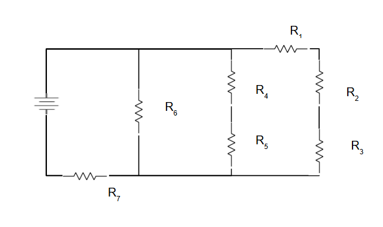
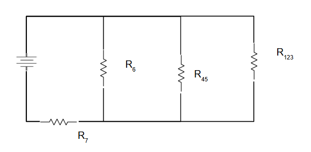

Circuit breakdown is a systematic approach to simplify complex circuits by identifying series and parallel combinations, then reducing them step by step to find the equivalent resistance. This method is essential for analyzing complex circuits in AP Physics C.
What is Circuit Breakdown?
Circuit Breakdown: A systematic method to simplify complex circuits by identifying and combining series and parallel resistors step by step until the entire circuit is reduced to a single equivalent resistance.
Circuit breakdown involves:
Identification: Finding series and parallel combinations
Simplification: Replacing combinations with equivalent resistors
Iteration: Repeating until the circuit is fully simplified
Verification: Checking that the final result makes sense
Step-by-Step Breakdown Method
1
Identify the Circuit Structure
First, carefully examine the circuit to identify all components and their connections. Look for obvious series and parallel combinations.

💡 Tip: Start by labeling all resistors and identifying which ones are in series vs. parallel.
2
Find Series Combinations
Look for resistors connected end-to-end (series). These can be combined using the series resistance formula.
$$R_{series} = R_1 + R_2 + R_3 + ...$$

⚡ Series Rule: Current is the same through all series resistors, voltage divides.
3
Find Parallel Combinations
Look for resistors connected across the same two points (parallel). These can be combined using the parallel resistance formula.